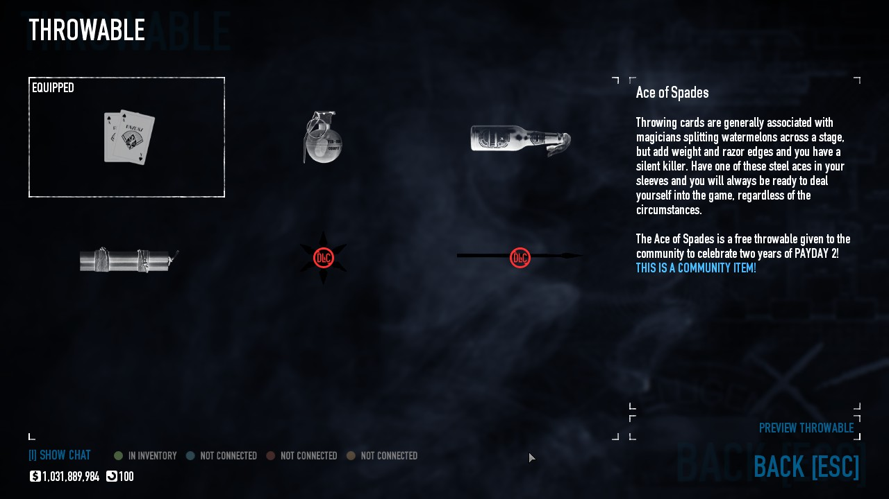
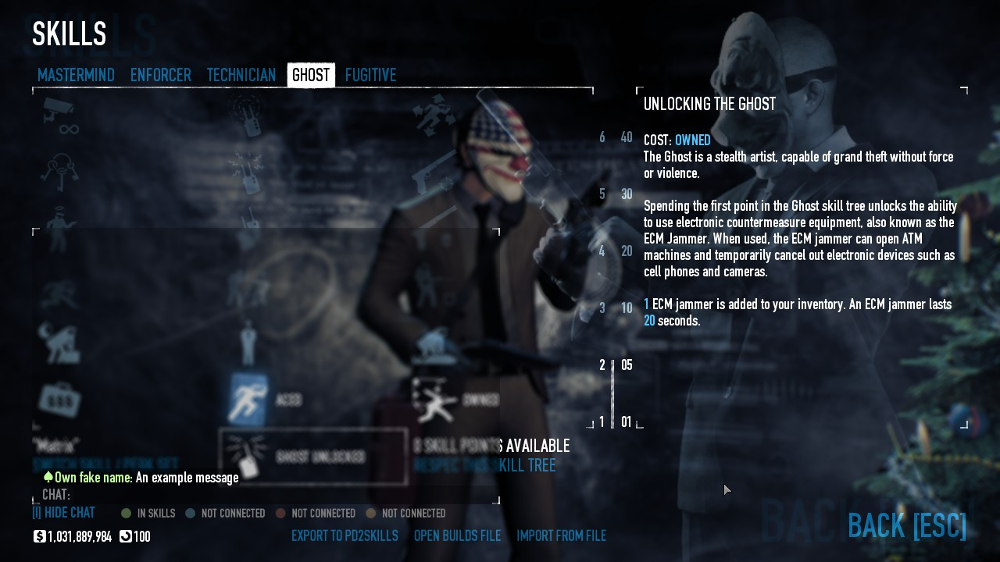

About
This mod enables accessing chat and viewing the states of other players in the lobby while in the inventory, blackmarket, preplanning, Crime.net, skills and perk deck selection screens. Phew, what a mouthful. The following preview screenshots will likely do a better job of explaining what this mod does to you than I can ever hope to, so scroll on below to have a look.
Download
http://download.paydaymods.com/download/latest/ICAPS
Previews (36 images)
New in 0.0.3 / revision 4:
New in 0.0.2 / revision 2:
(the following are old screenshots from 0.0.1 / revision 1)
Player inventory:
Blackmarket:

Weapon customization:
Weapon customization (reticle selection):
Mask customization:
Skill tree and perk decks:

Crime.net:
Crime.net (Side Jobs):
Crime.net (Contract selection):
Preplanning:
In-game Mission Briefing GUI (Loadout):
Usage
Installation of the mod is straightforward - simply install the mod the same way as any other BLT mod. No configuration is necessary.
Notes
- The Show Chat button pulses if new messages are received while the chat panel is closed
- The chat panel can be opened and closed using the same key for in-game chat
- With the exception of the Crime.net and preplanning chat panels, all other chat panels added by this mod are not transparent to mouse clicks (i.e. clicking anywhere in the latter chat panels does not cause the GUI behind them to respond to the click)
- All Ready players will have a subtle pulsing glow under their state text
- The local player's slot and empty player slots are dimmed out to avoid drawing unnecessary attention to them
- Player states are also shown in preplanning, with the drawing tools panel moved up slightly to avoid collision
- The available perk points text is moved up by 15 pixels when in a lobby to avoid potential collision with the player state text labels
- This mod also implements two lobby sync states that were unused by OVK, namely Modifying Weapon and Customizing Mask (as opposed to In Inventory being shown for those two screen types)
- Contract information is displayed while in the main menu lobby (new in 0.0.2 / revision 2)
- A job plan icon is added to the main menu lobby's contract box GUI (new in 0.0.2 / revision 2)
- Will only be visible if the host has set the lobby's preferred tactic to Stealth or Loud
- The chat panel has a 'ghost' mode (new in 0.0.2 / revision 2)
- If a new message is received while the chat panel is closed, the chat panel will immediately appear in a non-interactive, translucent form so that the message can instantly be read
- The 'ghost' chat panel fades away again 10 seconds after the most recent message, or immediately upon opening and closing the chat panel
- The 'ghost' chat panel will be made invisible for as long as the mouse cursor is within its area. This is to prevent chat spam from obscuring the GUI beneath the chat panel
- Player state text labels will be suppressed if the total player limit exceeds 7 players (new in 0.0.2 / revision 2)
- The inventory profile selector is moved up when in a lobby to resolve a collision with the player state text labels (new in 0.0.3 / revision 4)
- The localizations loading code was from TdlQ's excellent Lobby Player Info mod
- The French translations were provided by Mr.PlayYou [BE]
Testing this thing is a nightmare in itself
Download
http://download.paydaymods.com/download/latest/ICAPS
Changelog
0.0.1 / revision 1:
- Initial release
0.0.2 / revision 2 'A million years later':
- Added French translation by Mr.PlayYou [BE]
- Fixed an issue where opening the chat panel followed by the drawing tools panel
in preplanning would cause the player states panel to remain floating despite
the chat panel being closed
- Changed player state panels to be positioned using relative coordinates instead
of absolute coordinates
- Reduced the gap between the callsign and state text for each player
- Fixed chat output being unable to be scrolled with the mouse wheel in the
blackmarket nodes
- Added the chat and player state panels to the blackmarket weapon and mask
preview nodes
- Fixed an issue where an error string is displayed instead of a given player's
state while that player is joining the lobby
- Added support for displaying contract information while in the main menu lobby
- Added job plan icon to the main menu lobby's contract box GUI
- Will only be visible if the host has set the lobby's preferred tactic to
Stealth or Loud
- Added 'ghost' mode
- If a new message is received while the chat panel is closed, the chat panel
will immediately appear in a non-interactive, translucent form so that the
message can instantly be read
- The 'ghost' chat panel fades away again 10 seconds after the most recent
message, or immediately upon opening and closing the chat panel
- The 'ghost' chat panel will be made invisible for as long as the mouse cursor
is within its area. This is to prevent chat spam from obscuring the GUI
beneath the chat panel
- Improved keyboard navigation
- Chat input is now activated immediately upon opening the chat panel
- Pressing the Escape key while the chat panel is open now only closes the chat
panel instead of triggering a node backout (i.e. returning to the previous
screen)
- Behavior is unchanged if the chat panel is not open (i.e. in this case,
pressing Escape will return to the previous screen)
- Adjusted the player states panel for better compatibility with the BigLobby mod
- Player state text labels will now be suppressed if the total player limit
exceeds 7 players
- Added automatic patcher for BLT's defective DelayedCalls:Update() and
DelayedCalls:Add() implementations
0.0.2.1 / revision 3:
- Removed automatic patcher and replaced it with a dependency on the Delayed Calls
Fix mod
- Added the chat and player state panels to the new skilltree node
0.0.3 / revision 4 'GUI code is aggaffdigfajgifbgxpcvk':
- Removed dependency on the Delayed Calls Fix mod due to polling loop removal
- Replaced the time-driven job plan polling loop with an event-driven hook for
better efficiency
- Jostled the multi-profile selector upward when a lobby to resolve a collision
with the player state text labels
- Fixed an incompatibility issue with the multi-profile selector and Blackmarket
custom name input fields (thanks to BangL for reporting the issue)
- Added the chat and player state panels to the new upgradable safe house and
mutator list nodes
- Added the crimenet sync state for the mutator list node
- Mutated lobbies are now indicated with purple contract text
0.0.3.1 / revision 5:
- Fixed an incompatibility issue with the skilltree skillset name input field
(thanks to Phoenix for reporting the issue)
- Optimized InventoryChatAndPlayerStates:StoreJobData() slightly
0.0.3.2 / revision 6 'But why?':
- Updated for compatibility with BLT 2.x
- Added an empty placeholder icon (cba to make a proper one atm)
- Added a crash fix for running this mod alongside others that hook
MenuKitRenderer:_set_player_slot() without calling the original function (thanks
to dive_bomber for providing me with the information I needed to track this
issue down)
- Added the chat and player state panels to the new crew management node
- Contracts that disallow mutators (such as the safe house raid) will no longer
have their text misleadingly colorized in purple
- Blocked this mod's chat and player states panels from being added to GUI panels
when the local player has already spawned into the game (occurs when using the
large Crime.net screen in Dallas' corner in the upgraded safe house to view
trophies)